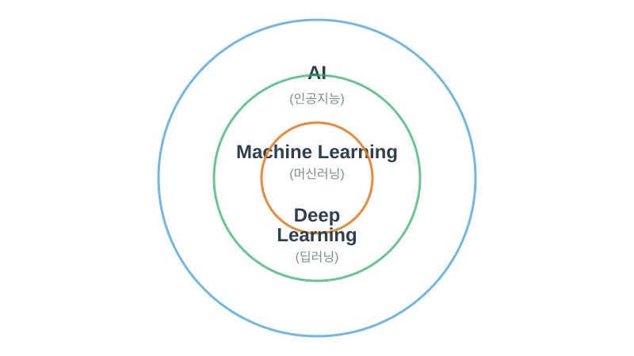
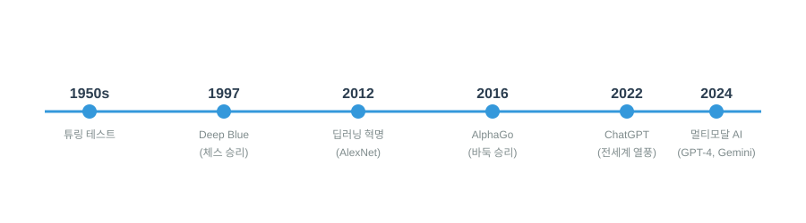
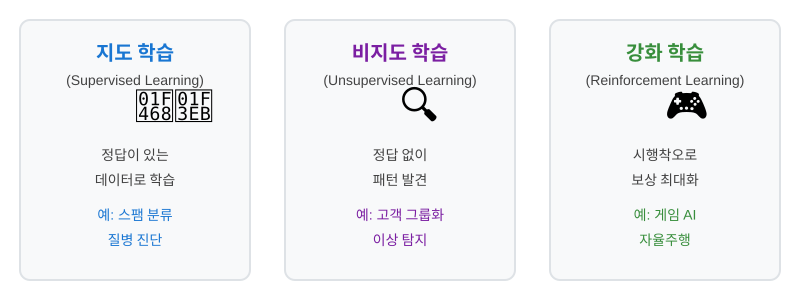

AI 개요 및 주요 용어 설명
학습 목표: AI의 기본 개념을 이해하고, 실무에서 자주 사용되는 핵심 용어를 익힙니다.
소요 시간: 약 2시간
난이도: ⭐ 입문
📚 목차
1. AI란 무엇인가?
1.1 AI의 정의
AI (Artificial Intelligence, 인공지능)는 사람처럼 생각하고 학습하는 컴퓨터 프로그램입니다.
쉽게 비유하면:
| 상황 | 사람 | AI |
|---|---|---|
| 사진 보기 | "이건 고양이야" | "이미지를 분석한 결과, 고양이일 확률 95%" |
| 글 쓰기 | 경험과 지식으로 문장 작성 | 학습한 패턴으로 문장 생성 |
| 번역 | 두 언어를 알고 있어서 번역 | 수많은 번역 예시를 학습해서 번역 |
1.2 AI vs 일반 프로그램
일반 프로그램
→ 프로그래머가 모든 규칙을 직접 작성AI 프로그램
→ AI가 데이터에서 패턴을 스스로 학습1.3 왜 지금 AI가 중요한가?
3가지 이유:
- 데이터 폭발 📊
- 매일 생성되는 데이터: 약 2.5조 바이트
-
사람이 직접 분석하기 불가능
-
컴퓨팅 파워 증가 💻
- GPU, TPU 등 고성능 칩 발전
-
클라우드 컴퓨팅으로 누구나 사용 가능
-
알고리즘 발전 🧠
- Transformer (2017)
- GPT, BERT 등 혁신적 모델 등장
2. AI의 종류와 발전 단계

그림 1: AI, 머신러닝, 딥러닝의 관계2.1 AI의 3단계
Stage 1: 약한 AI (Narrow AI) ⭐ 현재 우리가 쓰는 AI
- 특징: 특정 작업만 잘함
- 예시:
- Siri, Alexa (음성 비서)
- Netflix 추천 시스템
- 자율주행차
- ChatGPT (대화 생성)
Stage 2: 강한 AI (General AI) 🚧 개발 중
- 특징: 사람처럼 여러 작업을 종합적으로 수행
- 현황: 아직 완성되지 않음
Stage 3: 초지능 AI (Super AI) 🔮 먼 미래
- 특징: 인간보다 뛰어난 지능
- 현황: 이론적 개념
2.2 AI 기술의 발전 타임라인

그림 2: AI 기술의 주요 이정표1950s 튜링 테스트 제안
1960s ELIZA (최초 챗봇)
1997 IBM Deep Blue, 체스 세계 챔피언 이김
2011 IBM Watson, 퀴즈쇼 우승
2012 딥러닝 혁명 시작 (AlexNet)
2016 AlphaGo, 이세돌 9단 이김
2018 BERT (자연어 이해 혁신)
2020 GPT-3 출시
2022 ChatGPT 공개 (전 세계 열풍)
2023 GPT-4, Gemini 등 거대 언어 모델 경쟁
2024 멀티모달 AI (텍스트+이미지+비디오+음성)
3. 머신러닝 기초
3.1 머신러닝이란?
머신러닝(Machine Learning, ML)은 컴퓨터가 데이터에서 스스로 학습하는 기술입니다.
핵심 아이디어:
3.2 학습 방식 3가지

그림 3: 지도 학습, 비지도 학습, 강화 학습 비교1) 지도 학습 (Supervised Learning) 👨🏫
개념: 정답이 있는 데이터로 학습
예시:
활용: - 스팸 메일 분류 - 질병 진단 - 주가 예측
2) 비지도 학습 (Unsupervised Learning) 🔍
개념: 정답 없이 데이터의 패턴을 스스로 찾음
예시:
활용: - 고객 세분화 - 이상 거래 탐지 - 추천 시스템
3) 강화 학습 (Reinforcement Learning) 🎮
개념: 시행착오를 통해 보상을 최대화하는 방법을 학습
예시:
활용: - 게임 AI (AlphaGo) - 로봇 제어 - 자율주행
3.3 머신러닝의 핵심 요소
데이터 (Data) 📊
특성 (Feature) 🎯
모델 (Model) 🧠
학습 (Training) 🏋️
4. 딥러닝 이해하기
4.1 딥러닝이란?
딥러닝(Deep Learning)은 머신러닝의 한 종류로, 인간의 뇌를 모방한 신경망을 사용합니다.
뇌 vs 딥러닝
4.2 신경망의 구조
기본 구조
입력층 → [은닉층 1] → [은닉층 2] → ... → 출력층
예: 손글씨 숫자 인식
입력: 28x28 픽셀 이미지 (784개 숫자)
은닉층: 여러 층 (패턴 추출)
출력: 0~9 중 하나
"Deep"의 의미
4.3 딥러닝의 주요 종류
1) CNN (합성곱 신경망) 🖼️
특징: 이미지 인식에 특화
원리:
2) RNN (순환 신경망) 📝
특징: 순서가 있는 데이터 처리
원리:
3) Transformer 🚀
특징: 현재 가장 강력한 구조 (ChatGPT, GPT-4 기반)
원리:
4.4 딥러닝 vs 머신러닝
| 구분 | 머신러닝 | 딥러닝 |
|---|---|---|
| 데이터 | 적은 데이터로도 가능 | 대량의 데이터 필요 |
| 특징 추출 | 사람이 직접 정의 | AI가 자동으로 학습 |
| 계산 | 일반 CPU로 가능 | GPU/TPU 필요 |
| 정확도 | 중간 | 높음 |
| 예시 | 의사결정 트리, SVM | CNN, Transformer |
5. 주요 AI 용어 사전
5.1 기본 용어
알고리즘 (Algorithm) 📐
모델 (Model) 🧩
학습 (Training) 📚
추론 (Inference) 🔮
파라미터 (Parameter) ⚙️
5.2 성능 관련 용어
정확도 (Accuracy) 🎯
과적합 (Overfitting) 📉
일반화 (Generalization) 🌍
5.3 데이터 관련 용어
데이터셋 (Dataset) 📦
훈련 세트 (Training Set) 🏋️
검증 세트 (Validation Set) ✅
테스트 세트 (Test Set) 🧪
레이블 (Label) 🏷️
5.4 최신 AI 용어
LLM (Large Language Model) 💬
프롬프트 (Prompt) 📝
토큰 (Token) 🎫
파인튜닝 (Fine-tuning) 🔧
RAG (Retrieval-Augmented Generation) 🔍
할루시네이션 (Hallucination) 🌫️
멀티모달 (Multimodal) 🎨
6. 실생활 속 AI 사례
6.1 일상에서 만나는 AI
스마트폰 📱
쇼핑 🛒
엔터테인먼트 🎬
교통 🚗
6.2 산업별 AI 활용
의료 🏥
금융 💰
제조 🏭
고객 서비스 💬
7. AI 활용 시 알아야 할 것들
7.1 AI의 한계
1) 데이터 편향 ⚠️
2) 설명 불가능 🤷
3) 적대적 공격 🎭
4) 에너지 소비 ⚡
7.2 윤리적 이슈
개인정보 보호 🔒
저작권 ©️
일자리 대체 💼
7.3 AI와 함께 일하는 법
AI는 도구 🛠️
프롬프트 엔지니어링 🎯
좋은 질문 = 좋은 답변
나쁜 예:
"코드 짜줘"
좋은 예:
"Python으로 CSV 파일을 읽어서
각 열의 평균을 계산하는 코드를 작성해줘.
pandas 라이브러리를 사용하고
주석도 포함해줘."
비판적 사고 🧐
8. 다음 단계
8.1 학습 로드맵
Level 1: 기초 (지금 여기!) ⭐
Level 2: 실습 ⭐⭐
Level 3: 기술 ⭐⭐⭐
Level 4: 전문 ⭐⭐⭐⭐
8.2 추천 실습
오늘 바로 해볼 것 🚀
1. ChatGPT 사용해보기
2. AI 이미지 생성
도구: DALL-E, Midjourney, Stable Diffusion
프롬프트 예시:
"A futuristic city with flying cars, sunset, digital art"
3. AI 음성 변환
8.3 유용한 리소스
무료 강의 📺
AI 뉴스/블로그 📰
실습 플랫폼 💻
📝 요약 정리
핵심 포인트 10가지
- AI는 데이터에서 학습하는 프로그램입니다.
- 머신러닝은 AI의 한 방법이고, 딥러닝은 머신러닝의 한 종류입니다.
- 지도 학습 (정답 있음), 비지도 학습 (정답 없음), 강화 학습 (보상으로 학습)이 있습니다.
- LLM (대규모 언어 모델)이 현재 가장 주목받는 AI입니다.
- AI는 이미지, 텍스트, 음성, 비디오 등 다양한 데이터를 처리합니다.
- 프롬프트를 잘 작성하면 AI를 효과적으로 활용할 수 있습니다.
- AI에는 편향, 할루시네이션 등의 한계가 있습니다.
- AI는 도구이며, 사람의 판단이 여전히 중요합니다.
- 윤리적 사용이 필수입니다 (개인정보, 저작권 등).
- 지금 바로 ChatGPT 등으로 실습을 시작하세요!
✅ 체크리스트
학습 후 스스로 점검해보세요:
개념 이해
- [ ] AI, 머신러닝, 딥러닝의 차이를 설명할 수 있다
- [ ] 지도/비지도/강화 학습을 구분할 수 있다
- [ ] LLM이 무엇인지 설명할 수 있다
- [ ] 과적합과 일반화를 이해했다
용어
- [ ] 프롬프트, 토큰, 파라미터를 설명할 수 있다
- [ ] 할루시네이션이 무엇인지 안다
- [ ] RAG가 무엇인지 이해했다
실무
- [ ] AI 활용 사례를 3가지 이상 말할 수 있다
- [ ] AI의 한계를 설명할 수 있다
- [ ] 프롬프트를 효과적으로 작성할 수 있다
다음 단계
- [ ] ChatGPT를 사용해봤다
- [ ] AI 이미지 생성 도구를 써봤다
- [ ] 추가 학습 계획을 세웠다
💬 자주 묻는 질문
Q1. AI를 배우려면 수학을 잘해야 하나요?
A: AI를 사용하는 데는 수학이 필요 없습니다. AI를 개발하려면 선형대수, 미적분, 확률이 필요하지만, 도구로 활용하는 것은 누구나 가능합니다.
Q2. 프로그래밍을 모르는데 AI를 배울 수 있나요?
A: 네! ChatGPT, Midjourney 같은 AI 도구는 코딩 없이 사용 가능합니다. 다만, 더 깊이 있는 활용을 위해서는 Python 기초를 추천합니다.
Q3. AI가 내 직업을 대체할까요?
A: 반복적인 업무는 자동화될 수 있지만, 창의성, 판단, 대인 관계가 필요한 일은 여전히 사람이 중요합니다. 오히려 AI를 활용하는 능력이 경쟁력이 됩니다.
Q4. 무료로 AI를 배울 수 있나요?
A: 네! YouTube, Coursera, Fast.ai, Google Colab 등 무료 자료가 많습니다. ChatGPT 무료 버전으로도 충분히 연습할 수 있습니다.
Q5. AI 답변을 어디까지 믿어야 하나요?
A: AI는 도구일 뿐입니다. 중요한 결정은 반드시 사람이 검증해야 합니다. 특히 의료, 법률, 금융 등 전문 분야는 전문가 확인이 필수입니다.
🎓 마무리
축하합니다! AI의 기본 개념과 주요 용어를 모두 학습했습니다. 🎉
이제 할 일: 1. ✅ 이 문서를 다시 한 번 읽어보기 2. ✅ ChatGPT나 다른 AI 도구 사용해보기 3. ✅ 관심 있는 분야의 AI 사례 찾아보기 4. ✅ 다음 단계 학습 계획 세우기
기억하세요: - AI는 도구입니다. - 꾸준한 실습이 가장 중요합니다. - 비판적 사고를 잊지 마세요.
작성일: 2026-03-11
카테고리: Courses
태그: AI, 머신러닝, 딥러닝, 입문, 용어
소요 시간: 약 2시간
난이도: ⭐ 입문